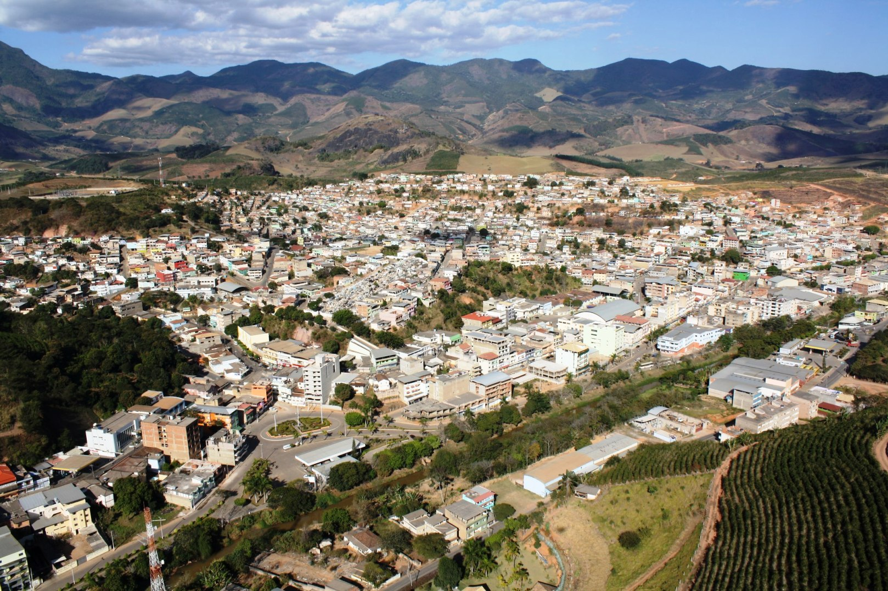

| Cidade | Descrição |
|---|---|
|  | Iúna (ES) é um município do sul capixaba, na região do Caparaó, com área de 460 km² e cerca de 30,4 mil habitantes (2024). Surgiu no século XIX com a abertura da estrada entre Minas Gerais e Vitória, e teve grande crescimento com a imigração italiana e a cafeicultura a partir de 1872. Tornou-se município em 1890. A economia se baseia no café, pecuária, extração de mármore e granito, serviços e turismo. É destino de visitantes por suas cachoeiras, montanhas, trilhas e pela proximidade do Parque Nacional do Caparaó. O principal acesso é a BR-262. |
| História História de Iúna (ES): O território começou a ser desmatado em 1814 com a abertura da Estrada Real São Pedro de Alcântara, pedida por D. João VI. O povoamento iniciou-se em 1815 com o Quartel do Rio Pardo, em área habitada pelos índios puris. Em 1825 foi criado o Aldeamento Imperial do Rio Pardo, que deu origem à primeira capela (1845) e, depois, à Matriz de Nossa Senhora da Pureza (1859). A freguesia São Pedro de Alcântara do Rio Pardo foi desmembrada em 1890, data considerada o aniversário da cidade. A imigração italiana (desde 1872) trouxe a cafeicultura e impulsionou o crescimento, seguida por outros povos europeus e do Oriente Médio no início do século XX. O município perdeu territórios para Mutum (1914), Ibatiba (1981) e Irupi (1991). Em 1943, o nome mudou de Rio Pardo para Iúna, que em tupi significa “rio preto”. |